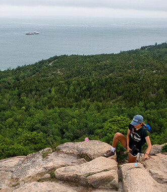
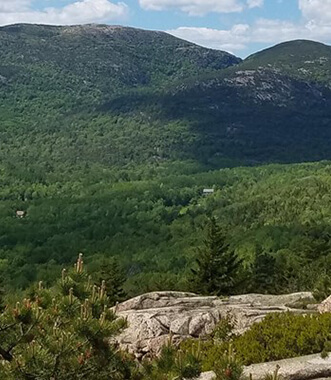
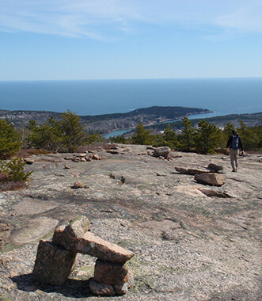

Covid-19 Response
.png)
Acadia National Park in Bar Harbor, Maine, protects the natural beauty of the highest rocky headlands along the Atlantic coastline of the United States, an abundance of habitats, and a rich cultural heritage. At 3.5 million visits a year, it's one of the top 10 most-visited national parks in the United States. Visitors enjoy 27 miles of historic motor roads, 158 miles of hiking trails, and 45 miles of carriage roads. We’d love to see you around!
Acadia has plenty of activities for everyone, like hiking, biking, birdwatching, stargazing and more!
There's lots to do and discover in Acadia during the off season.
Learn about park entry fees and annual passes including how to buy, print, and display your pass on your dashboard before you get here.
Review a list of current volunteer opportunities and other ways to get involved to find the right Acadia experience for you.
As anyone who has had the good fortune of experiencing it knows, there’s nothing quite like spotting a wild animal in its natural habitat. While seeing wildlife is never guaranteed, knowing a little more will increase the likelihood and make those chance encounters even sweeter.
Please give the animals the space they need! Depending on the animal, there are recommended safe distances to view them at.
Stepping off trail to get a closer view can disrupt wildlife and can cause damage to the fragile ecosystems in the park.
Feeding wildlife can habituate them to human presence and hurt their chances of survival.
All human food and pet food must be stored in a hard-sided food locker or enclosed vehicle when not in use. Additionally, make sure to clean up your site when you leave, and dispose of garbage properly. Even though black bear sightings are rare, racoons and other animals with a great sense of smell can still become negatively impacted when trash and food is improperly stored.
The park speed limits exist to keep visitors and wildlife safe. Use extra caution when driving at dawn, dusk or nighttime, as these tend to be the hours when wildlife is most active.
This is a 1.4 mile loop trail that ascends a 450 ft cliff face. Exposed cliffs, iron rungs, and granite staircases climb this trail revealing scenic ocean views.
The Gorham Mountain Loop is 3.5 miles featuring mountains and a rocky coastline with panoramic views of Mount Desert Island, Frenchman Bay, and the outlying islands.
This out and back trail is the longer option for hiking Cadillac Mountain with spectacular views of the Atlantic Ocean and outlying islands before reaching the summit.
Hikers, bikers, and horseback riders may experience reduced access temporarily to Eagle Lake Carriage Road in Acadia National Park this summer during a project to rehabilitate the carriage road while preserving its historic character.
The Park Loop Road will close to motor vehicles for the season, with the exception of the two-mile section from the Sand Beach Entrance Station to Otter Cliff Road and access to the Jordan Pond area.
The National Park Service has developed a vehicle reservation system to reduce severe traffic and parking congestion so visitors can plan ahead and have a more enjoyable visit to Acadia National Park.